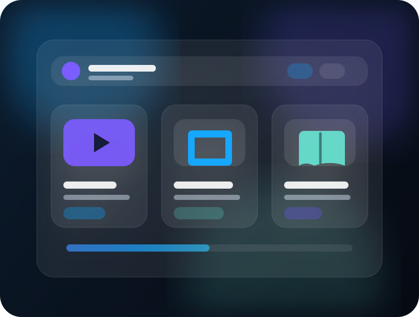

Anime, manga and novels in one shell
Browse separate source ecosystems, then manage library, history, updates and downloads from a unified app structure.
Aurora fork for anime, manga and ranobe
Tadami brings anime, manga and novels into a single open-source Android app, wrapped in a polished Aurora interface built for browsing, watching, reading and restoring your collection with less friction.
Add sources and continue your queue from a single Aurora hub.
Built for the long watchlist
Tadami keeps the familiar Aniyomi foundation while focusing on refined entry screens, media-specific discovery and a reader experience that respects your preferences.
Browse separate source ecosystems, then manage library, history, updates and downloads from a unified app structure.
Greeting header, hero card, recent blocks and media sections make the app feel more like a personal hub.
Theme tuning, behavior settings, download queues and novel-oriented improvements support long sessions.
Install and browse sources for each media type with compatibility work for novel ecosystems.
Keep library data under your control with local backups and optional Google Drive synchronization.
Visual system
The page uses a generated design system rather than a template: warm editorial spacing, high-contrast text, gentle blur, animated gradients and functional call-to-actions that stay readable in light and dark mode.

Get the app
Guided onboarding, Treasury rewards, per-media library auto-update schedules and another round of Aurora and novel sync refinements.
git clone https://github.com/andarcanum/Tadami-Aniyomi-fork.git
cd Tadami-Aniyomi-fork
./gradlew assembleReleaseRequires JDK 17 and Android SDK with compile SDK 35.
Open-source foundation
The project is Apache-2.0 licensed and keeps a clear module map: app shell, domain logic, data repositories, extension APIs, local sources, Compose UI building blocks and translations.
Read contributing guide